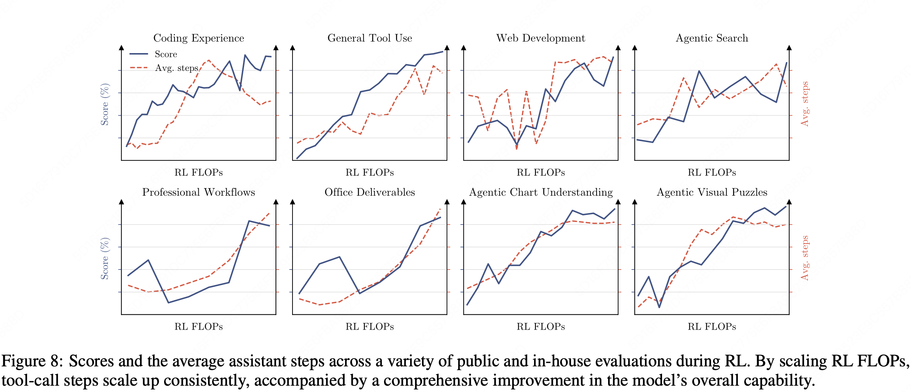
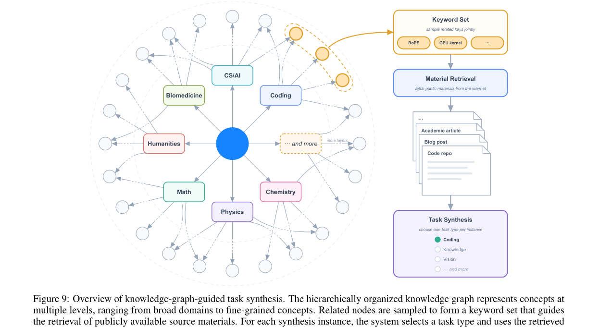

K3 在前代 Kimi 的 SFT pipeline 基础上扩大数据集，大幅拓宽了对复杂 agentic 任务的覆盖。
| 3 大 domain（含全部子任务模块） | low effort | high effort | max effort |
|---|---|---|---|
| 通用 general 通用体验 · 视觉 · 推理 · 忠实性 faithfulness · 搜索 · 知识工作 |
E1 gen · low |
E2 gen · high |
E3 gen · max |
| 通用 agent general agents 长程助手 long-horizon · 深度研究 deep research · 段落级写作 |
E4 ag · low |
E5 ag · high |
E6 ag · max |
| 编程 agent coding agents 软件工程 SWE · 编程体验 · 算子内核 kernel · Web 开发 |
E7 code · low |
E8 code · high |
E9 code · max |
随 RL FLOPs 增加，这三大 domain 在 knowledge / reasoning / vision / general agent / coding 上一致提升，平均 tool-call 步数也持续上升——"多花算力做 RL"确实换来"更会用工具、更强"。

judge 被强制走四步 rubric-scorepad 协议：①读产出（先完整读候选）→ ②生成 rubric（现场列评分细则）→ ③按 rubric 打分（逐条对着细则打）→ ④记入 scorepad（据此判胜负）。防 reward hacking：引入 verbosity 预算控制——某输出长度超过 $\sigma\cdot\ell_0$ 就自动输掉这场比较，不给它靠堆字取胜的机会。
主线：采样属于哪个 (domain, effort) → 选对应 teacher → 逐 token log-ratio 当 dense reward → 喂进 RL。
d, e = sample_domain_and_effort() # 采样域 d 与 effort 档 e ∈ {low,high,max}
teacher = EXPERTS[(d, e)] # 9 个专家里选对应那位, 冻结
y = student.generate(x, effort=e) # on-policy: 用 student 自己当前生成轨迹
rewards = []
for t in range(len(y)):
logp_teacher = teacher.logprob(y[t], x, y[:t]) # teacher 在该前缀下的 log 概率
logp_student = student.logprob(y[t], x, y[:t], e) # student 在同前缀 + effort 下
r = stop_gradient(logp_teacher - logp_student) # sg(log(π_teacher/π_θ))
r = clip(r, -R_MAX, R_MAX) # 裁掉极端 advantage 稳训
rewards.append(r) # per-token dense reward
loss = policy_gradient_loss(student, y, rewards) # 兼容 partial rollout三处关键：(1) EXPERTS[(d,e)] 体现"多 teacher"，每步只用一位；(2) stop_gradient 是 Eq.15 的 sg，log-ratio 只当数值奖励；(3) rewards 是 per-token——这正是它能"无缝接进 RL + 兼容 partial rollout"的原因。作者试过更精细的 top-k distillation（对齐 top-k 分布），但没有明显收益，遂保留这个更简洁的单 token log-ratio 方案。
Kimi Code、Claude Code、Codex、OpenClaw、Hermes 等主流 harness，也能拼全新的壳。
有了壳和任务，还得有可靠的 reward。K3 针对不同能力造了五类专门环境（§4.2.3–4.2.7），核心原则贯穿始终：reward 必须 robustly verifiable，且防得住 reward hacking。（注：low/high/max reasoning-effort 是叠加在这些环境之上的"想多深"维度，不是独立环境类型。）下面逐类拆开详讲。
三类任务共性是产出可验证答案：多步复杂信息搜索（model 规划 research、逐步从 web 搜证据、产出可对拍的 verifiable answer）；专业日常工作（投行 / 数据分析 / 法律——把复杂请求分解、在 sandbox 里操作领域工具、跨几十到几百步完成一份 deliverable）；多步视觉推理（STEM 题 / 视觉谜题 / 图表理解）。视觉推理尤其精巧：在带 Python 解释器的隔离 sandbox 里，模型迭代写代码执行去 crop / zoom / transform 输入图像、精算、验证中间结果，并把执行输出（含生成的图）当作新观测喂回——图像操作与观测越多，视觉推理越强。
任务谱系从单算子 kernel 到融合 mega-kernel，源自 Flash Linear Attention 等高质量 GitHub repo；覆盖 CUDA / Triton / CuTe DSL / Gluon / ThunderKittens / TileLang 多种编程方式与 BF16 / FP8 / FP4 数值格式。reward 兼看正确性 + 性能：每个 kernel 带 PyTorch reference，解超过数值误差阈值直接给 0；性能对标专家实现——追平给 0.5，逼近硬件 roofline 趋近 1。再配一套 hacking-detection 系统，惩罚 CUDA graph replay / 输入缓存 / 降精度 等作弊，并随开发中发现新作弊持续加防线。
为 long-horizon 助手造 Gmail / Notion / Slack / Canvas 的高保真 mock——保留真实应用核心语义，但可复现、可大规模交互，无需外部 API、无 rate limit。在此之上设计受真实职场流程（HR / 法律 / 金融）启发的复杂任务：agent 在一个持久、逐日演化的环境里跨多个模拟日操作，遇到跨应用分布的几十个相互依赖事件；单条 rollout 可达数千次工具调用、百万级 context token。每个事件自带评判（确定性规则或 LLM evaluator）；初始工作区由 agent 自主搜网构建，RL 框架也被扩展以支持这种 living environment。
AET 设定近乎苛刻：每个任务只给 agent 五样东西——初始状态、一个受约束的目标、基于工具的动作空间、执行预算，外加一个独立的 verifier。不给参考轨迹、不给预定义流程。agent 只看到目标、上下文、约束与验证接口，必须自主完成任务分解 / 工具选择 / 规划 / 错误恢复 / 终止判断，训练出一个通用闭环：假设 → 行动 → 分析反馈 → 调整。
专家精选的 web 开发任务：输入从一行场景描述到多段规格；产物涵盖网站 / 交互游戏 / 3D·WebGL / 数据可视化 / SVG / 全栈应用。每个任务跑在容器化 sandbox，且在多种 agent scaffold（而非单一固定 harness）下 rollout，促跨 scaffold 泛化。reward = 确定性检查 + 模型判分两部分：确定性检查功能测试应用行为、复刻类打结构与像素级相似度；模型判分用其它模型做源码审查、看/交互产物。build 失败、运行报错、或假装实现（fake 而非 implement）→ reward 直接清零。
K3 用 co-located RL training（训练与 rollout 同卡）把每个 1M-context 实验压进几百张 GPU，再用 partial rollout 削超长轨迹的尾延迟。硬件利用率上去了，却带来一个新矛盾：要留给下一轮的 rollout KV-cache 和 训练本身要的显存 互相抢地方——长上下文下尤其致命。三招各治一处：
K3 用多种 sandbox runtime 支撑后训练与评测：传统 container、GPU sandbox，以及最亮眼的 microVM 沙箱 AgentENV（与合作伙伴联合研发，专为 agentic 负载设计）。它围绕三个目标：
翻译成人话：最大化 draft 与 target 概率分布的重叠，就是直接最大化"draft 猜的 token 被 target 采纳"的比例，即直接优化投机解码的接受率，让推理更快。
Kimi K3 的后训练，不是发明一个新目标函数，而是把 agentic 能力拆成一条"分工再合并 + 环境自造"的流水线：SFT 冷启动 → 3 domain × 3 effort 裂变出 9 个专家分别 RL → MOPD 用 per-token log-ratio 把 9 个专家蒸回一个 student。
而真正的护城河藏在 Environment Scaling：white-box 壳防过拟合、知识图谱造题量与覆盖、五类可验证环境给可靠 reward、hidden verifier + hacking-detection 防作弊——与其说 K3 赢在模型，不如说赢在能把环境本身 scale 起来。